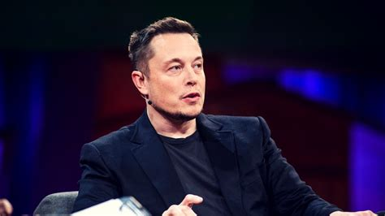

TESLA
A Tesla ,na altura Tesla Motors, foi fundada em 2003 por Martin Eberhard e Marc Tarpenning, que financiou a empresa . Ambos desempenharam papéis ativos na empresa antes do envolvimento de Elon Musk, atual CEO, J.B. Straubel, atual director técnico e Ian Wright. O principal objetivo da Tesla era comercializar veículos elétricos, começando desta forma por um carro desportivo premium. Em Outubro de 2016, a Tesla anunciou que todos os carros que estava a produzir - o Model S, Model X e o novo Model 3, que foi lançado em meados de 2017 - teriam o hardware necessário para que o condutor não tenha de tocar no volante.
Elon Reeve Musk é um empreendedor e filantropo sul-africano-canadense-americano. Ele é o fundador, CEO e CTO da SpaceX; CEO da Tesla Motors; vice-presidente da OpenAI, fundador e CEO da Neuralink e co-fundador e presidente da SolarCity. Em 7 de janeiro de 2021, com um patrimônio pessoal estimado em cerca de 188,5 bilhões de dólares, tornou-se a pessoa mais rica do mundo, de acordo com a Bloomberg, ultrapassando o empresário Jeff Bezos. No ranking da Forbes, Musk ocupa o segundo lugar.
Marc Tarpenning é um empresário americano de tecnologia que é cofundador da Tesla Inc. com Martin Eberhard em 2003. Marc atuou como diretor financeiro e vice-presidente de engenharia da Tesla.
Jeffrey Brian Straubel é um empresário americano. J.B. passou 15 anos na Tesla, como cofundador e diretor técnico até assumir uma função de consultor em julho de 2019. Em 2017, Straubel estabeleceu a Redwood Materials, trabalhando na reciclagem de baterias de íon de lítio e lixo eletrônico.
Martin Forest Eberhard é um engenheiro, empresário de Silicon Valley. É licenciado em Engenharia Informática e tem um Mestrado em Engenharia Eletrotécnica. Cofundou a Tesla, Inc. com Marc Tarpenning Em 2003, onde Eberhard foi o seu presidente original, e serviu como seu CEO até finais de 2007.
Ian Wright é um engenheiro da Nova Zelândia que fundou a Tesla Motors em 2003. Ele foi o criador do carro elétrico mais rápido do mundo e agora é CEO da sua empresa WrightSpeed.